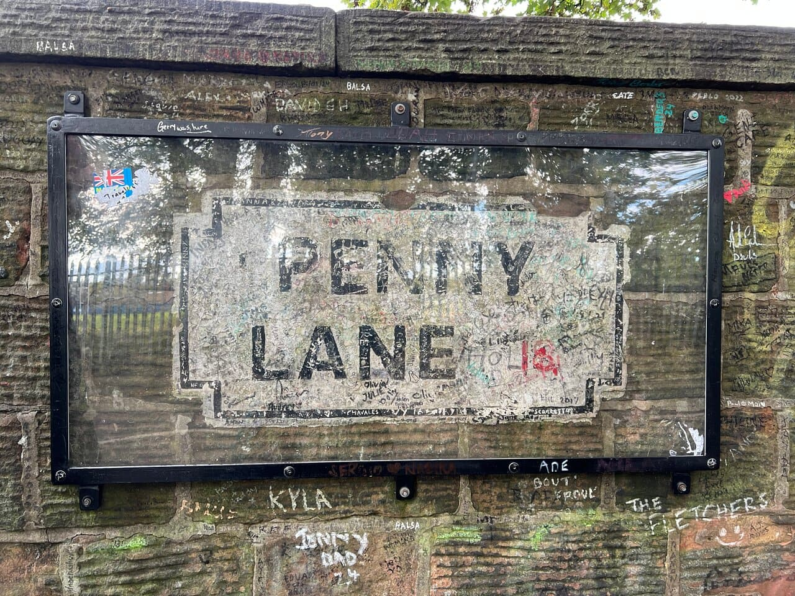

In the Footsteps of the Beatles Tour
A great half day tour including visits to Penny Lane, Strawberry Field, the childhood homes (exteriors only), their schools and colleges and much more.
We end the tour back in city centre with drop offs at either the Beatles Story, the Beatles Statue, Matthew Street for the Cavern or at the Railway Station, Hotel or Liverpool John Lennon Airport